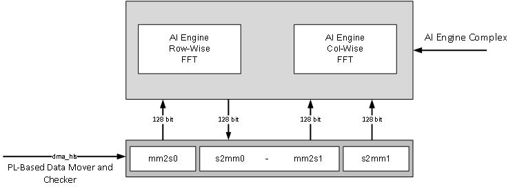

In this section, you will build and run the 2D-FFT design using the AI Engine implementation. You will compile the AI Engine design and integrate it into a larger system design (including the PL kernels and PS host application). Review Integrating the Application Section in the AI Engine Documentation for the general flow.
At the end of this section, the design flow will generate a new directory (called build/). Underneath are sub-directories named fft2d_$(MAT_ROWS)x$(MAT_COLS)/x$(FFT_2D_INSTS)/ (for example, fft2d_1024x2048/x1/) depending on value of matrix dimensions ${MAT_ROWS}, ${MAT_COLS} and the number of instances $(FFT_2D_INSTS) chosen in the build. Each sub-directory contains the hw_emu/ and/or hw/ subfolders. The respective subfolders contain Work/ and libadf.a, outputs from the AI Engine compiler, the host app executable and the builds, targeted to hw or hw_emu respectively. The hw_emu/ subfolder contains the build for hardware emulation. The hw/ subfolder contains the build for hardware run on a VCK190 board.
To run the following make steps (that is, make kernels, make graph, and so on), you must be in the AIE/ folder. The options that can be specified in the make steps are as follows.
TARGET: This can be set to hw or hw_emu to build the design in the hardware or hardware emulation flow respectively. The default option is hw_emu.
FFT_2D_INSTS: This can be set to 1, 5, or 10 to build the design with the number of kernel instances. The default is 1.
ITER_CNT: The number of iterations the design is run. The default is 8.
FFT_2D_PT: FFT 2D point. Permissible values are 64, 128, 256, 512, and 2048.
MAT_ROWS x MAT_COLS: Dimensions of the matrix (number of rows in the input matrix x number of cols in the input matrix). Automatically configured as FFT_2D_PT/2, FFT_2D_PT. Permissible values are 32x64, 64x128, 128x256, 256x512, and 1024x2048. The default is 1024x2048.
EN_TRACE: Flag to enable trace profiling. 0 is disabled and 1 is enabled. The default is 0 (disabled).
The Makefile uses the following directory references:
# Relative fft_2d directory
RELATIVE_PROJECT_DIR := ./
# Absolute fft_2d directory = <user path>/Tutorials/AI_Engine/fft_2d
PROJECT_REPO := $(shell readlink -f $(RELATIVE_PROJECT_DIR))
DESIGN_REPO := $(PROJECT_REPO)/design
AIE_SRC_REPO := $(DESIGN_REPO)/aie_src
HOST_APP_SRC := $(DESIGN_REPO)/host_app_src
PL_SRC_REPO := $(DESIGN_REPO)/pl_src
SYSTEM_CONFIGS_REPO := $(DESIGN_REPO)/system_configs
PROFILING_CONFIGS_REPO := $(DESIGN_REPO)/profiling_configs
BASE_BLD_DIR := $(PROJECT_REPO)/build
FFTPT_BLD_DIR := $(BASE_BLD_DIR)/fft2d_$(MAT_ROWS)x$(MAT_COLS)
INSTS_BLD_DIR := $(FFTPT_BLD_DIR)/x$(FFT_2D_INSTS)
BUILD_TARGET_DIR := $(INSTS_BLD_DIR)/$(TARGET)
WORK_DIR := Work
If you are already familiar with the AI Engine and Vitis kernel compilation flows, you can build the entire design for each case of FFT_2D_INSTS with one command:
make run (default hardware emulation, 1 instance, iterations=8, matrix dimentions rows=1024 and columns=2048, no trace-profiling )
or
make run TARGET=hw FFT_2D_INSTS=5 ITER_CNT=16 EN_TRACE=1 FFT_2D_PT=64 (hardware, 5 instances, 16 iterations, enable trace profiling, matrix dimentions rows=32 and columns=64 )
This command runs the make kernels,make graph,make xclbin,make application,make package, and make run_emu for hardware emulation or to run on hardware (VCK190 board) depending on the TARGET you specify. The settings also apply to the individual make steps listed below.
The generated files for each FFT_2D_INSTS are placed under an individual directory: $(BUILD_TARGET_DIR)/. Each make step to build the design is specified in the following sections. These sections also detail the options used and the location of input and output files in each case.
In this step, the Vitis compiler takes any Vitis compiler kernels (RTL or HLS C) in the PL region of the target platform (xilinx_vck190_base_202110_1) and the AI Engine kernels and graph and compiles them into their respective XO files. The following commands compile the kernels (default TARGET=hw_emu, FFT_2D_INSTS=1, ITER_CNT=8, and FFT_2D_PT=2048).
make kernels
The expanded command is as follows (for dma_hls):
mkdir -p $(BUILD_TARGET_DIR); \
cd $(BUILD_TARGET_DIR); \
v++ --target hw_emu --hls.clock 250000000:dma_hls --platform xilinx_vck190_base_202110_1 \
--save-temps --temp_dir $(BUILD_TARGET_DIR)/_x --verbose -g -c -k dma_hls \
$(DESIGN_REPO)/pl_src/dma_hls.cpp -o $(BUILD_TARGET_DIR)/dma_hls.hw_emu.xo
See this page for a detailed description of all Vitis compiler switches. The following table provides a summary of the switches used.
| Switch | Description |
|---|---|
| --target | -t [hw|hw_emu] | Specifies the build target. |
| --platform | -f | Specifies the name of a supported acceleration platform as specified by the $PLATFORM_REPO_PATHS environment variable or the full path to the platform XPFM file. |
| --save-temps | -s | Directs the Vitis compiler command to save intermediate files/directories created during the compilation and link process. Use the --temp_dir option to specify a location to write the intermediate files to. |
| --temp_dir |
This allows you to manage the location where the tool writes temporary files created during the build process. The temporary results are written by the Vitis compiler, and then removed, unless the --save-temps option is also specified. |
| --verbose | Display verbose/debug information. |
| --compile | -c | Required for compilation to generate XO files from kernel source files. |
| --kernel \<arg>|-k \<arg> | Compile only the specified kernel from the input file. Only one -k option is allowed per Vitis compiler command. |
| --output | -o | Specifies the name of the output file generated by the V++ command. The DMA HLS kernels output should be XO. |
| Input | Description |
|---|---|
| $(PL_SRC_REPO)/dma_hls.cpp | Defines the data mover PL kernel. |
| Output | Description |
|---|---|
| $(BUILD_TARGET_DIR)/dma_hls.hw_emu.xo | The data mover kernel object file. |
An ADF graph can be connected to an extensible Vitis platform (the graph I/Os can be connected either to platform ports or to ports on Vitis kernels through Vitis compiler connectivity directives).
The AI Engine ADF C++ graph of the design contains AI Engine kernels and PL kernels.
All interconnects between kernels are defined in the C++ graph
All interconnections to external I/O are fully specified in the C++ simulation testbench (graph.cpp) that instantiates the C++ ADF graph object.
To compile the graph using the Makefile flow type (default FFT_2D_INSTS=1, ITER_CNT=8, FFT_2D_PT=2048):
make graph
The following AI Engine compiler command compiles the AI Engine design graph:
cd $(BUILD_TARGET_DIR); \
aiecompiler -include=$(AIE_SRC_REPO) -include=<DSPLIB_ROOT>/L1/include/aie \
-include=<DSPLIB_ROOT>/L1/src/aie \
-include=<DSPLIB_ROOT>/L1/tests/aie/inc \
-include=<DSPLIB_ROOT>/L1/tests/aie/src \
-include=<DSPLIB_ROOT>/L2/include/aie \
-include=<DSPLIB_ROOT>/L2/tests/aie/common/inc \
--verbose --Xpreproc="-DFFT2D_INSTS=1" --Xpreproc="-DMAT_ROWS=1024" --Xpreproc="-DMAT_COLS=2048" \
--platform=<PLATFORM_REPO_PATHS/xilinx_vck190_base_202110_1>/xilinx_vck190_base_202110_1.xpfm \
--log-level=5 --test-iterations=2 --dataflow --heapsize=7000 \
--Xchess="main:bridge.llibs=softfloat m" --workdir=Work $(AIE_SRC_REPO)/graph.cpp 2>&1 | tee -a aiecompiler.log
See this page for full AI Engine programming environment documentation.
The following table provides a summary of the switches used.
| Switch | Description |
|---|---|
| --include=\<string> | Specify compile-time include directory (zero or more). |
| --verbose|-v | Verbose output of the AI Engine compiler emits compiler messages at various stages of compilation. These debug and tracing logs provide useful messages on the compilation process. |
| --Xpreproc="-D\<Pre-processor Macro String>" | Specify compile time macro. |
| --Xchess="\<Chess Make Options>" | Specify compile time chess make options; "main:bridge.llibs=softfloat m" enables floating point operations. |
| --heapsize=\<int> | Heap size in bytes. |
| --log-level=\<int> | Log level for verbose logging (default=1). |
| --workdir=\<string> | By default, the compiler writes all outputs to a sub-directory of the current directory, called Work. Use this option to specify a different output directory. |
The following is a description of the output objects that results from executing the AI Engine compiler (aiecompiler) command.
| Inputs Sources | Description |
|---|---|
| $(AIE_SRC_REPO)/graph.cpp | Defines the row wise and col wise FFT graph objects. |
| Output Objects | Description |
|---|---|
| $(BUILD_TARGET_DIR)/libadf.a | Compiled AI Engine design graph. |
| $(BUILD_TARGET_DIR)/Work/ | Directory that contains all outputs of the AI Engine compiler. |
After the AI Engine kernels and graph and PL HLS kernels have been compiled, you can use the Vitis compiler to link them with the platform to generate a XCLBIN file.
The Vitis tools allow you to integrate the AI Engine, HLS, and RTL kernels into an existing extensible platform. This is an automated step from a software developer perspective where the platform chosen is provided by the hardware designer. Alternatively, you can opt to use one of the many extensible base platforms provided by Xilinx, and use the Vitis tools to build the hardware design and integrate the AI Engine and PL kernels into it.
To test this feature in this tutorial, use the base VCK190 platform to build the design. The command to run this step is shown in the following example (default TARGET=hw_emu, FFT_2D_INSTS=1, ITER_CNT=8, EN_TRACE=0, FFT_2D_PT=2048):
make xclbin
The expanded command is as follows:
cd $(BUILD_TARGET_DIR); \
v++ -l --platform xilinx_vck190_base_202110_1 --save-temps \
--temp_dir $(BUILD_TARGET_DIR)/_x --verbose -g --clock.freqHz 250000000:dma_hls_0 \
--clock.defaultTolerance 0.001 --config $(SYSTEM_CONFIGS_REPO)/x1.cfg \
--vivado.prop fileset.sim_1.xsim.simulate.log_all_signals=true \
-t hw_emu -o $(BUILD_TARGET_DIR)/vck190_aie_fft_2d.hw_emu.xclbin \
$(BUILD_TARGET_DIR)/dma_hls.hw_emu.xo \
$(BUILD_TARGET_DIR)/libadf.a
If EN_TRACE is enabled, the following Vitis compiler flags are also set:
--profile.data dma_hls:all:all or profile.data dma_hls:all:strmInp_from_colwiseFFT (for higher instances) \
--profile.trace_memory DDR
For higher values of FFT_2D_INSTS, only the strmInp_from_colwiseFFT port is profiled to avoid too much data.
See this page for a detailed description of Vitis linking options.
| Switch | Description |
|---|---|
| --platform | -f | Specifies the name of a supported acceleration platform as specified by the $PLATFORM_REPO_PATHS environment variable or the full path to the platform XPFM file. |
| --save-temps | -s | Directs the V++ command to save intermediate files/directories created during the compilation and link process. Use the --temp_dir option to specify a location to write the intermediate files to. |
| --temp_dir |
This allows you to manage the location where the tool writes temporary files created during the build process. The temporary results are written by the Vitis compiler, and then removed, unless the --save-temps option is also specified. |
| --verbose | Display verbose/debug information. |
| --config |
Specifies a configuration file containing V++ switches. |
| --output | -o | Specifies the name of the output file generated by the V++ command. In this design the outputs of the DMA HLS kernels and the PL kernels interfacing with the AI Engine are in XO files. |
| --profile.data [ |
Enables monitoring of data ports through the monitor IPs. This option needs to be specified during linking. See this page for detailed profiling options. |
| --profile.trace_memory \<FIFO>:\<size>|\<MEMORY>[\<n>] | When building the hardware target (-t=hw), use this option to specify the type and amount of memory to use for capturing trace data. See this page for detailed profiling options. |
The information to tell the linker how to connect the AI Engine and PL kernels together is described in a configuration file, system_configs/x$(FFT_2D_INSTS).cfg. The file describes the overall connection scheme of the system.
[connectivity]
nk=dma_hls:1:dma_hls_0
#Connections For FFT-2D Insts 0...
stream_connect=dma_hls_0.strmOut_to_rowiseFFT:ai_engine_0.DataIn0
stream_connect=ai_engine_0.DataOut0:dma_hls_0.strmInp_from_rowiseFFT
stream_connect=dma_hls_0.strmOut_to_colwiseFFT:ai_engine_0.DataIn1
stream_connect=ai_engine_0.DataOut1:dma_hls_0.strmInp_from_colwiseFFT
[advanced]
# Disable Profiling in hw_emu so that it is faster...
param=hw_emu.enableProfiling=false
# Export the xsa of the design..
param=compiler.addOutputTypes=hw_export
See this page for a detailed description of the Vitis compiler configuration file.
| Switch | Comment |
|---|---|
| --connectivity.nk | Number of kernels. dma_hls:1:dma_hls_0 means that the Vitis compiler should instantiate one dma_hls kernel and name the instance dma_hls_0. |
| --connectivity.stream_connect | How the kernels will connect to IPs, platforms, or other kernels. The output of the AI Engine compiler tells you the interfaces that need to be connected. dma_hls_0.strmOut_to_rowiseFFT:ai_engine_0.DataIn0 means that the Vitis compiler should connect the port strmOut_to_rowiseFFT of the dma_hls PL kernel to the shim channel of the AI Engine with the logical name DataIn0, defined in $(AIE_SRC_REPO)/graph.cpp as part of the PLIO instantiation. |
| param=compiler.addOutputTypes=hw_export | This option tells the Vitis compiler that besides creating an XCLBIN file, it also outputs an XSA file which is needed to create a post-Vivado fixed platform for Vitis software development. |
The Vitis compiler calls the Vivado® IP integrator under the hood to build the design. The platform and kernels are input to the Vivado Design Suite, which produces a simulation XSA or an XSA after running place and route on the design. The point at which the XSA is produced from Vivado depends on the -target option set on the Vitis compiler command line.
You can now view the Vivado project, which is located in the $(BUILD_TARGET_DIR)/_x/link/vivado/vpl/prj directory. You have now have generated the XCLBIN file that will be used to execute your design on the platform.
You can compile the host application by following the typical cross-compilation flow for the Cortex A72. To build the application, run the following command (default FFT_2D_INSTS=1, ITER_CNT=8, FFT_2D_PT=2048):
make application
or
cd $(BUILD_TARGET_DIR); \
aarch64-xilinx-linux-g++ -mcpu=cortex-a72.cortex-a53 -march=armv8-a+crc -fstack-protector-strong\
-D_FORTIFY_SOURCE=2 -Wformat -Wformat-security -Werror=format-security --sysroot=$(SDKTARGETSYSROOT) -O -c\
-std=c++14 -D__linux__ -D__PS_ENABLE_AIE__ -DXAIE_DEBUG -DFFT2D_INSTS=1 -DITER_CNT=8\
-DMAT_ROWS=1024 -DMAT_COLS=2048 -I$(SDKTARGETSYSROOT)/usr/include/xrt -I$(XILINX_VITIS)/aietools/include/\
-I$(SDKTARGETSYSROOT)/usr/include -I$(SDKTARGETSYSROOT)/usr/lib -I$(AIE_SRC_REPO) -I$(HOST_APP_SRC)\
-I$(DSPLIB_ROOT)/L1/include/aie -I$(DSPLIB_ROOT)/L1/src/aie -I$(DSPLIB_ROOT)/L1/tests/aie/inc\
-I$(DSPLIB_ROOT)/L1/tests/aie/src -I$(DSPLIB_ROOT)/L2/include/aie -I$(DSPLIB_ROOT)/L2/tests/aie/common/inc\
$(BUILD_TARGET_DIR)/$(WORK_DIR)/ps/c_rts/aie_control_xrt.cpp -o $(BUILD_TARGET_DIR)/app_control.o
aarch64-xilinx-linux-g++ -mcpu=cortex-a72.cortex-a53 -march=armv8-a+crc -fstack-protector-strong\
-D_FORTIFY_SOURCE=2 -Wformat -Wformat-security -Werror=format-security --sysroot=$(SDKTARGETSYSROOT) -O -c\
-std=c++14 -D__linux__ -D__PS_ENABLE_AIE__ -DXAIE_DEBUG -DFFT2D_INSTS=1 -DITER_CNT=8\
-DMAT_ROWS=1024 -DMAT_COLS=2048 -I$(SDKTARGETSYSROOT)/usr/include/xrt -I$(XILINX_VITIS)/aietools/include/\
-I$(SDKTARGETSYSROOT)/usr/include -I$(SDKTARGETSYSROOT)/usr/lib -I$(AIE_SRC_REPO) -I$(HOST_APP_SRC)\
-I$(DSPLIB_ROOT)/L1/include/aie -I$(DSPLIB_ROOT)/L1/src/aie -I$(DSPLIB_ROOT)/L1/tests/aie/inc\
-I$(DSPLIB_ROOT)/L1/tests/aie/src -I$(DSPLIB_ROOT)/L2/include/aie -I$(DSPLIB_ROOT)/L2/tests/aie/common/inc\
$(HOST_APP_SRC)/fft_2d_aie_app.cpp -o $(BUILD_TARGET_DIR)/fft_2d_aie_app.o -L$(SDKTARGETSYSROOT)/usr/lib\
-L$(XILINX_VITIS)/aietools/lib/aarch64.o -L$(XILINX_VITIS)/aietools/lib/lnx64.o -ladf_api_xrt -lxrt_coreutil
aarch64-xilinx-linux-g++ -mcpu=cortex-a72.cortex-a53 -march=armv8-a+crc -fstack-protector-strong
-D_FORTIFY_SOURCE=2 -Wformat -Wformat-security -Werror=format-security --sysroot=$(SDKTARGETSYSROOT)\
$(BUILD_TARGET_DIR)/app_control.o $(BUILD_TARGET_DIR)/fft_2d_aie_app.o -L$(SDKTARGETSYSROOT)/usr/lib\
-L$(XILINX_VITIS)/aietools/lib/aarch64.o -L$(XILINX_VITIS)/aietools/lib/lnx64.o\
-ladf_api_xrt -lxrt_coreutil -o $(BUILD_TARGET_DIR)/fft_2d_aie_xrt.elf
See this page for XRT documentation. See this page for details of host application programming.
| Switch | Description |
|---|---|
| -O | Optimize. | Optimizing compilation takes more time and a lot more memory for a large function. With -O, the compiler tries to reduce code size and execution time, without performing any of the optimizations that can take a great deal of compilation time. |
| -D__linux__ | |
| -DXAIE_DEBUG | Enable debug interface capabilities where certain core status, event status, or stack trace can be dumped out. |
| -D\<Pre-processor Macro String>=\<value> | Pass pre-processor macro definitions to the cross-compiler. |
| -I \<dir> | Add the directory dir to the list of directories to be searched for header files. |
| -o \<file> | Place output in file <file>. This applies regardless of the output being produced, whether it be an executable file, an object file, an assembler file, or preprocessed C code. |
| --sysroot=\<dir> | Use dir as the logical root directory for headers and libraries. For example, if the compiler normally searches for headers in /usr/include and libraries in /usr/lib, it instead searches dir/usr/include and dir/usr/lib. This is automatically set by the env_setup.sh script. |
| -l\<library> | Search the library named library when linking. The 2D-FFT tutorial requires the adf_api_xrt and xrt_coreutil libraries. |
| -L \<dir> | Add directory <dir> to the list of directories to be searched for -l. |
The following is a description of the input sources compiled by the AI Engine compiler command.
| Inputs Sources | Description |
|---|---|
| $(HOST_APP_SRC)/fft_2d_aie_app.cpp | Source application file for the fft_2d_aie_xrt.elf that will run on an A72 processor. |
| $(BUILD_TARGET_DIR)/Work/ps/c_rts/aie_control_xrt.cpp | This is the AI Engine control code generated implementing the graph APIs for the Lenet graph. |
The following is a description of the output objects that results from executing the AI Engine compiler command with the above inputs and options.
| Output Objects | Description |
|---|---|
| $(BUILD_TARGET_DIR)/fft_2d_aie_xrt.elf | The executable that will run on an A72 processor. |
With the AI Engine outputs created, as well as the new platform, you can now generate the programmable device image (PDI) and a package to be used on an SD card. The PDI contains all the executables, bitstreams, and configurations of the device. The packaged SD card directory contains everything to boot Linux, the generated applications, and the XCLBIN.
The command to run this step is as follows (default TARGET=hw_emu, EN_TRACE=0, FFT_2D_INSTS=1, and FFT_2D_PT=2048):
make package
or
cp $(PROJECT_REPO)/run_script.sh $(BUILD_TARGET_DIR)/
cd$(BUILD_TARGET_DIR); \
v++ -p -t hw --save-temps --temp_dir $(BUILD_TARGET_DIR)/_x -f xilinx_vck190_base_202110_1\
--package.rootfs $(XLNX_VERSAL)/rootfs.ext4\
--package.kernel_image $(XLNX_VERSAL)/Image --package.boot_mode=sd\
--package.out_dir $(BUILD_TARGET_DIR)/package --package.image_format=ext4\
--package.sd_file $(BUILD_TARGET_DIR)/fft_2d_aie_xrt.elf \
$(BUILD_TARGET_DIR)/vck190_aie_fft_2d.hw.xclbin $(BUILD_TARGET_DIR)/libadf.a \
--package.defer_aie_run \
If EN_TRACE is enabled, the following Vitis compiler flags are also set:
--package.sd_file $(PROFILING_CONFIGS_REPO)/xrt.ini
If XRT_ROOT is set, the following Vitis compiler flags are also set:
--package.sd_dir $(XRT_ROOT)
See this page for more details about packaging the system.
| Switch | Description |
|---|---|
| --target | -t [hw|hw_emu] | Specifies the build target. |
| --package | -p | Packages the final product at the end of the Vitis compile and link build process. |
| --package.rootfs \<arg> | Where \<arg> specifies the absolute or relative path to a processed Linux root file system file. The platform RootFS file is available for download from xilinx.com. Refer to the Vitis Software Platform Installation for more information. |
| --package.kernel_image \<arg> | Where \<arg> specifies the absolute or relative path to a Linux kernel image file. Overrides the existing image available in the platform. The platform image file is available for download from xilinx.com. Refer to the Vitis Software Platform Installation for more information. |
| --package.boot_mode \<arg> | Where \<arg> specifies |
| --package.image_format | Where \<arg> specifies the \<ext4|fat32> output image file format. ext4 is the Linux file system and fat32 is the Windows file system. |
| --package.sd_file | Where \<arg> specifies an ELF or other data file to package into the sd_card directory/image. This option can be used repeatedly to specify multiple files to add to the sd_card directory. |
| --package.defer_aie_run | Load the AI Engine application with the ELF file, but wait to run it until graph run directs it. This is required in the PS based AI Engine flow. |
| Inputs Sources | Description |
|---|---|
| $(PLATFORM_REPO_PATHS)/sw/versal/xrt | The PS host application needs the XRT headers in this folder to execute. |
| $(PLATFORM_REPO_PATHS)/sw/versal/xilinx-versal/rootfs.ext4 | The root filesystem file for PetaLinux. |
| $(PLATFORM_REPO_PATHS)/sw/versal/xilinx-versal/Image | The pre-built PetaLinux image that the processor boots from. |
| $(BUILD_TARGET_DIR)/fft_2d_aie_xrt.elf | The PS host application executable created in the make application step. |
| $(BUILD_TARGET_DIR)/vck190_aie_fft_2d.hw_emu.xclbin | The XCLBIN file created in the make xclbin step. |
| $(BUILD_TARGET_DIR)/libadf.a | The compiled AI Engine design graph created in the make graph step. |
The output of the Vitis compiler package step is the package directory that contains the contents to run hardware emulation.
| Output Objects | Description |
|---|---|
| $(BUILD_TARGET_DIR)/package | The hardware emulation package that contains the boot file, hardware emulation launch script, PLM and PMC boot files, PMC and QEMU command argument specification files, and Vivado simulation folder. |
After packaging, everything is set to run hardware emulation. To run emulation, use the following command (default TARGET=hw_emu):
make run_emu
or
###########################################################################
Hardware Emulation Goto:
$(BUILD_TARGET_DIR)/package
and do:
./launch_hw_emu.sh or ./launch_hw_emu.sh -g (for waveform viewer)...
When hardware emulation is launched, you will see the QEMU simulator load. Wait for the autoboot countdown to go to zero. After a few minutes, the root Linux prompt comes up:
root@versal-rootfs-common-2021.1:~#
After the root prompt comes up, run the following commands to run the design:
mount /dev/mmcblk0p1 /mnt
cd /mnt
export XILINX_XRT=/usr
./fft_2d_aie_xrt.elf a.xclbin
The fft_2d_aie_xrt.elf executes. After a few minutes, you should see the output with TEST PASSED on the console. When this is shown, run the following keyboard command to exit the QEMU instance:
#To exit QEMU Simulation
Press CtrlA, let go of the keyboard, and then press x
To run with waveform, do the following:
cd $(BUILD_TARGET_DIR)/package
./launch_hw_emu.sh -g
The XSIM Waveform Viewer is launched. Drag and drop the signals into the viewer and click Play to start the emulation. Go back to the terminal and wait for the Linux prompt to show up. In the XSIM Waveform Viewer, you will see the signals you added to the waveform adjusting over the execution of the design. When this is done, hit the pause button and close the window to end the emulation.
The following figure shows a waveform view of the 32x64 - 1x design.

To run the design in hardware, rerun the following make steps with TARGET=hw and other applicable options (see the preceding make steps specified above).
make kernels TARGET=hw
make xclbin TARGET=hw
make package TARGET=hw
These commands create a $(BUILD_TARGET_DIR) folder with the kernels, XCLBIN, and package for a hardware run.
Run the following step to set up the execution file, generated images, and base images ($(BUILD_TARGET_DIR)/package/sd_card and $(BUILD_TARGET_DIR)/package/sd_card.img).
make run_emu TARGET=hw
These commands create a build/hw folder with the kernels, XCLBIN, and package for a hardware run. Follow steps 1-9 to run the fft_2d_aie_xrt.elf executable on your VCK190 board.
Step 1. Ensure your board is powered off.
Step 2. Use an SD card writer (such as balenaEtcher) to flash the sd_card.img file to an SD card.
Step 3. Plug the flashed SD card into the top slot of the VCK190 board.
Step 4. Set the switch (SW1 Mode\[3:0\]=1110 = OFF OFF OFF ON).
Step 5. Connect your computer to the VCK190 board using the USB cable included with the board.
Step 6. Open a TeraTerm terminal and select the correct COM port. Set the port settings to the following:
Port: <COMMXX>
Speed: 115200
Data: 8 bit
Parity: none
Stop Bits: 1 bit
Flow control: none
Transmit delay: 0 msec/char 0 msec/line
Step 7. Power on the board.
Step 8. Wait until you see the root@versal-rootfs-common-2021_1 Linux command prompt. Press Enter a few times to get past any xinit errors.
Step 9. Run the following commands in the TeraTerm terminal:
cd /mnt/sd-mmcblk0p1
export XILINX_XRT=/usr
./init.sh
./fft_2d_aie_xrt.elf a.xclbin
The following figure shows a high-level block diagram of the design. The test harness consists of the AI Engine and data mover HLS kernels (dma_hls). In this setup, there is an AXI4-Stream interface between the data mover kernels and AI Engines, with a data width of 128 bits. The data mover kernels and the AI Engine array interface are running at 250 MHz.
The data mover is a PL-based data generator and checker. It generates impulse input and checks the output of the row-wise FFT core for its response. It then generates the transposed pattern of the row-wise FFT output and feeds that to the col-wise FFT core and checks its output.

The design in this tutorial starts with a base platform containing the control interface and processing system (CIPS), NoC, AI Engine, and the interfaces among them. The Vitis compiler linker step builds on top of the base platform by adding the AI Engine graphs and PL kernels. To add the various functions in a system-level design, PL kernels are added to the base platform depending on the application (that is, the PL kernels present in each design might vary). An ADF graph is connected to an extensible Vitis platform where the graph I/Os are connected either to the platform ports or to ports on Vitis kernels through the Vitis compiler connectivity directives. In the design, the components are added by the Vitis compiler -l step (see make XCLBIN) and include the following:
libadf.a
Data mover kernel (dma_hls.[hw|hw_emu].xo)
Connection interfaces defined in the system configuration file
To see a schematic view of the design with the extended platform as shown in the following figure, open the following in Vivado:
`build/fft2d_$(MAT_ROWS)x$(MAT_COLS)/x$(FFT_2D_INSTS)/[hw|hw_emu]/_x/link/vivado/vpl/prj/prj.xpr`

In this design, the 2D FFT computation happens in two stages: the first compute is across the row vectors and the second stage is performed across the column vectors.The input data is accessed linearly and streamed to the AI Engines which perform MAT_COLS( default 2048 ) point FFT. The data coming out of the AI Engines is streamed to a PL kernel where it is checked against the expected pattern (the first row should be 1 and the remaining should be 0). If there is a mismatch, it is recorded in the variable stage0_errCnt. The transposed pattern of the output of the row vectors is then linearly streamed into another AI Engine which performs MAT_ROWS( default 1024 ) point FFT. The output is streamed into a data mover kernel again and is checked against the expected pattern (all values should be 1). If there is a mismatch, it is stored in the variable stage1_errCnt. Finally, the sum of stage0_errCnt and stage1_errCnt is returned from the kernel, which is read in the host app to determine whether the test has passed or failed.
The system debugging and profiling IP (DPA) is added to the PL region of the device to capture AI Engine runtime trace data if the EN_TRACE option is enabled in the design. The dma_hls kernel and the AI Engine array interface are both operating at 250 MHz. Unlike the HLS/DSP implementation, there is no clock domain crossing in the PL region in this design.
The top-level AI Engine graph, graph.cpp, contains two sub-graphs: FFTrows_graph and FFTcols_graph. Each sub-graph contains the individual AI Engine kernel, *FFTrow_gr.getKernels(), and *FFTcol_gr.getKernels(), which performs MAT_COLS and MAT_ROWS point FFT respectively.
The PL-based data movers consist of the dma_hls kernel, which generates impulse input and checks the output of each FFT stage for the expected pattern.
It internally comprises four loops (mm2s0, s2mm0, mm2s1, and s2mm1), with s2mm0 - mm2s1 sequenced one after the other and wrapped into the dmaHls_rowsToCols function. mm2s0, dmaHls_rowsToCols, and s2mm1 are concurrently scheduled.
The data width is 128 bits at both the AXI4-stream I/O sides, running at 250 MHz.
The software design in the AI Engine 2D-FFT tutorial consists of the following sections:
The following figure elaborates on the AI Engine implementation methodology.

Both AI Engine graphs for FFTrows_graph and FFTcols_graph are to be configured to be independent, with runtime ratios set to >= 0.6 so that each can be run independently of the other.
...
runtime<ratio>(*FFTrow_gr.getKernels()) = 0.6;
...
runtime<ratio>(*FFTcol_gr.getKernels()) = 0.6;
...
The FFTrows_graph graph performs MAT_COLS point FFT and runs for MAT_ROWS number of iterations. For the FFTcols_graph graph, increase the TP_WINDOW_VSIZE to MAT_COLS instead of MAT_ROWS and it does MAT_ROWS point FFT, but runs for MAT_ROWS number of iterations instead of MAT_COLS. This reduces the ping-pong overhead which improves the overall throughput.
Large windows may result in mapper errors due to excessive memory usage. The increased TP_WINDOW_VSIZE reduces ping-pong overhead, but increases the utilization of AIE cores and thereby the power consumption. In this design due to rows to cols ratio being 1:2 the TP_WINDOW_VSIZE of both graphs are also in the same ratio. Which gives an additional increase in throughput with minimal increase in utilization.
...
// TP_WINDOW_VSIZE for FFTrows_graph...
#define FFT_ROW_TP_WINDOW_VSIZE MAT_COLS
// TP_WINDOW_VSIZE for FFTcols_graph
// Increasing the "TP__WINDOW _VSIZE" so that the ping-pong overhead is less
// Assigning it as MAT_COLS instead of MAT_ROWS...
#define FFT_COL_TP_WINDOW_VSIZE MAT_COLS
...
// FFTrows_graph I/O WINDOW BUFF SIZE IN BYTES...
#define FFT_ROW_WINDOW_BUFF_SIZE (FFT_ROW_TP_WINDOW_VSIZE * 4)
// FFTcols_graph I/O WINDOW BUFF SIZE IN BYTES...
#define FFT_COL_WINDOW_BUFF_SIZE (FFT_COL_TP_WINDOW_VSIZE * 4)
...
The data mover comprises four loops: mm2s0, s2mm0, mm2s1, and s2mm1. The s2mm0 and mm2s1 functions are wrapped into a single function, dmaHls_rowsToCols. Within that the execution sequence, s2mm0 is followed by mm2s1. The s2mm0 and s2mm1 functions check the output of the row-wise and col-wise FFT respectively against the expected golden output.
Concurrent scheduling is required so that each function runs independently and the execution of one function is not blocking the other. The concurrent scheduling of the three functions mm2s0, dmaHls_rowsToCols, and s2mm1 is achieved using #pragma HLS DATAFLOW as shown in the following example.
#pragma HLS DATAFLOW
...
LOOP_ITER_MM2S0:for(int i = 0; i < iterCnt; ++i)
{
#pragma HLS loop_tripcount min=1 max=8
mm2s0(strmOut_to_rowiseFFT, matSz);
}
LOOP_ITER_S2MM0_TO_MM2S1:for(int i = 0; i < iterCnt; ++i)
{
#pragma HLS loop_tripcount min=1 max=8
dmaHls_rowsToCols(strmInp_from_rowiseFFT, strmOut_to_colwiseFFT, \
matSz, rows, cols, stg0_errCnt, goldenVal);
}
LOOP_ITER_S2MM1:for(int i = 0; i < iterCnt; ++i)
{
#pragma HLS loop_tripcount min=1 max=8
s2mm1(strmInp_from_colwiseFFT, matSz, stg1_errCnt, goldenVal);
}
...
The following figure shows the data mover scheduler view.

The following figure shows the data mover dataflow view.

The streaming interface data width is kept at 128 bits to reduce read/write overhead while processing data.
AI Engine kernels are configured for cint16 / 4bytes and the streaming interface is at 128bit / 16bytes. The frequency of the AI Engine array is 1000 MHz and the data mover is kept at 250 MHz, maintaining a 1:4 ratio.